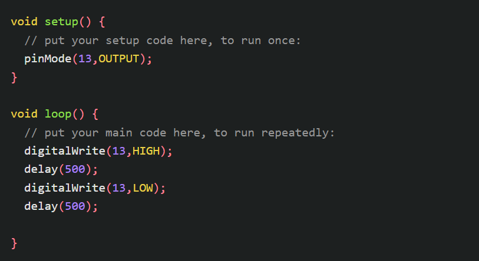
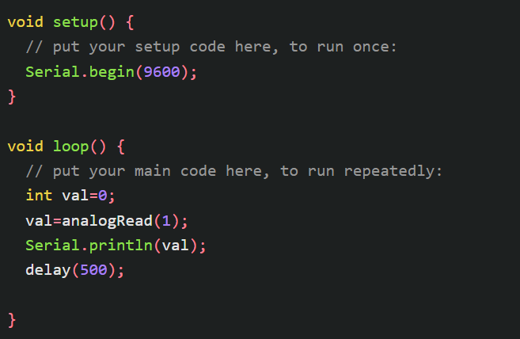

Arduinoとは
Arduinoとは、電子工作やプログラミングを体験できる小さなコンピュータである。
プログラムを書くことで、センサーの値を読み取ったり、モーターを動かしたりすることができる。
- センサーで明るさを検知し、暗くなったら電気をつける
- LEDを点滅させる（Lチカ）
- ボタンを押したらライトが光る
Arduinoを動かす
Arduinoを動かすには、プログラムを入力するための開発環境「Arduino IDE」が必要である。
Arduino IDEをダウンロードし、ArduinoとPCを接続してプログラムを書き込む。
Lチカ
方法
Lチカとは、LEDを点滅させる基本的なプログラムである。
LEDとジャンパー線をブレッドボードに接続し、以下のプログラムを入力する。

※ delay(1000); とすると1秒ごとに点滅する。
0.1秒にしたい場合は delay(100); とする。
センサーで明るさ測定
センサー
CdSセルと10kΩ抵抗、ジャンパー線をブレッドボードに接続し、プログラムを入力する。

※ブレッドボードは正しい位置に差し込まないと動作しないため注意する。